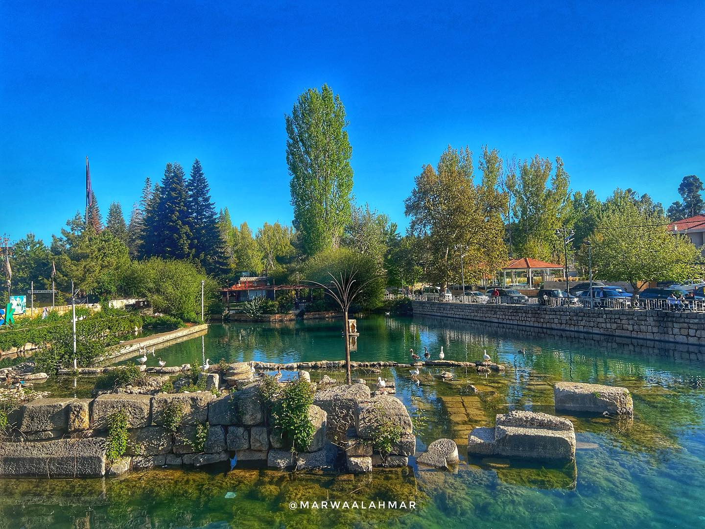

The Wonders of Baalbeck
Baalbeck is one of the most extraordinary archaeological sites in the world. The monumental scale of its ruins and the incredible craftsmanship of its temples make it a place like no other. Here are some reasons why Baalbeck is so special:
- Home to the largest Roman temple ever built - the Temple of Jupiter
- Features some of the biggest stone blocks used in construction anywhere in the world
- The Temple of Bacchus is one of the best preserved Roman temples globally
- Hosts the annual Baalbeck International Festival, a world-class cultural event
- Offers breathtaking views of the surrounding Bekaa Valley
- Baalbeck stores are a treasure trove of Lebanese handicrafts, spices, and Roman-inspired souvenirs.

Nature's Harmony
"A ribbon of water and green gardens stitches together Baalbek's colossal past and living present."
The Al-Qaa River and lush gardens surrounding the ruins create a peaceful contrast to the massive stone monuments, offering visitors moments of tranquility amid the awe-inspiring history.